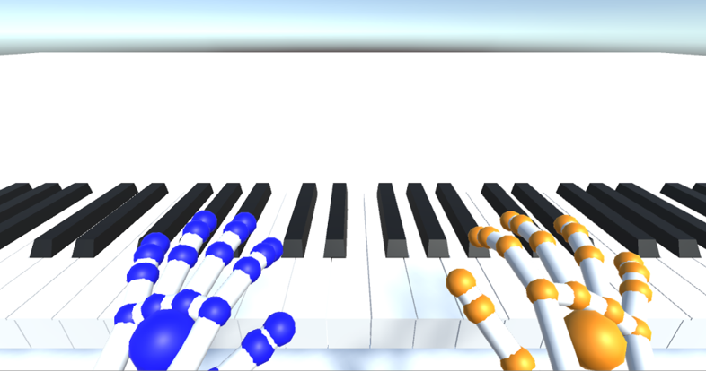

Virtual Piano with the Leap Motion
By Desarae Cruz, Edward Lee, and Trey Yu
Project Developed in "Introduction to Human-Computer Interaction" course, taught by Dr. Francisco Ortega at Colorado State University
With the Leap Motion tracking device, Blender, and Unity Game Engine, we successfully created a working prototype of a virtual piano.
Motivation: With technology becoming more of an integral part of our daily lives, we wanted to see how feasible it is to combine the rather traditional music field with modern technology. Piano is among one of the most popular instruments to learn, and is very versatile. However, they can be very expensive, and consume a lot of space. Therefore, we attempted to develop a low-cost, space saving alternative to the traditional piano.
Development
- We first created a full 88-key piano in Blender, and imported it into our Unity project.
- We imported the Leap Motion's assests into the Unity project.
- We added colliders, layers, and 3D physics to each key to detect collision with only the user's hands.
- We added a modified version of the button pressing script, by Felix Noller, found here.
- We added a sound for each key in the scene. The audio files we imported can be found here.
Future Work
After performing user experiments to test the functionality and accuracy of our application, we found that the development for this project is far from over. Future work could include:
- 1. fine-tuning the script to provide a smoother interface.
- 2. Implementing VR capabilities, to view and interact with the full 88-key piano.
- 3. Adding either tactile or visual feedback, to aid the user in understanding their hand's positioning.